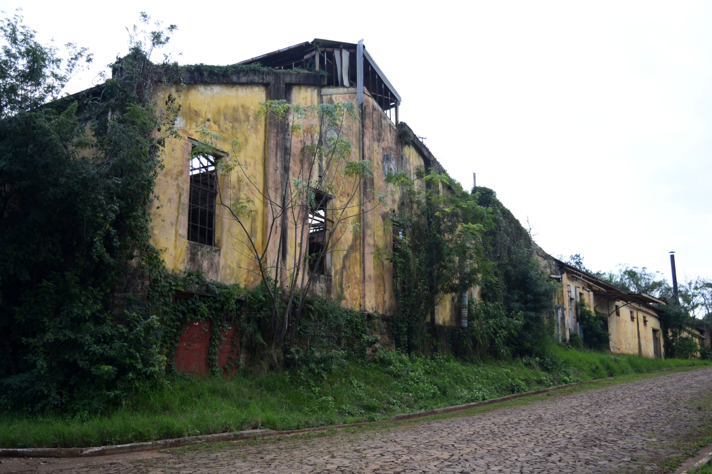
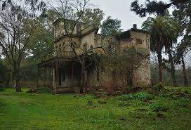
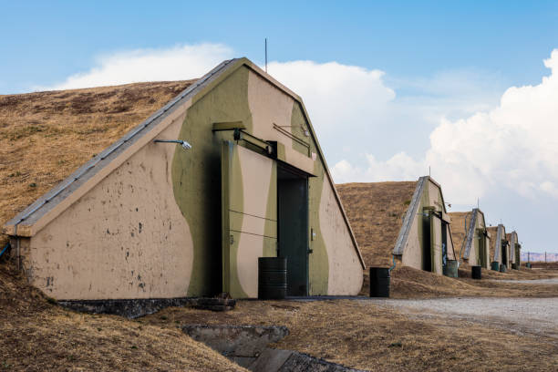

Sobre nosotros
Historia del refugio

El Refugio 665 se construyó aprovechando un viejo centro de logística e investigación alimenticia, con galpones enormes, fácil acceso al campo, y una red de túneles subterráneos que conectaban con las distintas unidades de la fabrica Nutrovo
Bonafide.
Fue improvisado por los militares que llegaron a Marcos Paz, dirigidos por el General Prats. El mismo estuvo al principio formado por un grupo mixto de científicos, militares retirados y familias locales que decidieron quedarse y resistir en lugar de huir.
El refugio como muchos otros surgió en medio del colapso, las pocas zonas aún libres del hongo se convirtieron en núcleos de refugios autosuficientes, donde se cultiva manualmente, se filtra el aire y se controlan estrictamente las entradas.

Se estima que durante el 2026 y 2027 se construyeron más de 90.000 refugios alrededor del mundo, de los cuales 10 corresponden a territorio argentino. Sin embargo, solo tres siguen operativos y en contacto durante 2036:
- Refugio 665 Marcos Paz
- Refugio 1820 Tandil
- Refugio 442 Pergamino

El resto está incomunicado o confirmado como perdido, debido a falta de cultivos, infiltraciones por esporas, o ataques violentos por parte de infectados y desesperados.
Nos alimentamos con lo poco que plantamos. Sellamos las puertas. El aire entra por filtros que cambiamos cada semana con lo último que queda. Cada noche escuchamos fuego y gritos afuera. Y rezamos.
— Fragmento de carta anónima hallada en un dron caído, cerca del perímetro del Refugio 665.
Bitácora del diario del General.
La situación en Argentina empeora minuto a minuto. Desde hace una semana, no hay comunicaciones confiables con el interior del país. Las estaciones de onda corta caen una tras otra. En ciudades como Salta, Trelew o Paraná, no se reportan señales humanas desde hace 48 horas.
El Ministerio de Defensa ha ordenado una línea de fuego permanente alrededor de los tres refugios activos, y autorizó ataques preventivos ante cualquier brote cercano.
No hay margen de error. Cualquier contacto con el hongo significa una sentencia para todos.
- Ultima transmisión del General José L. Prats.
Esta es la transmisión de emergencia del refugio tanto formato OGG como MPEG para el sitio.